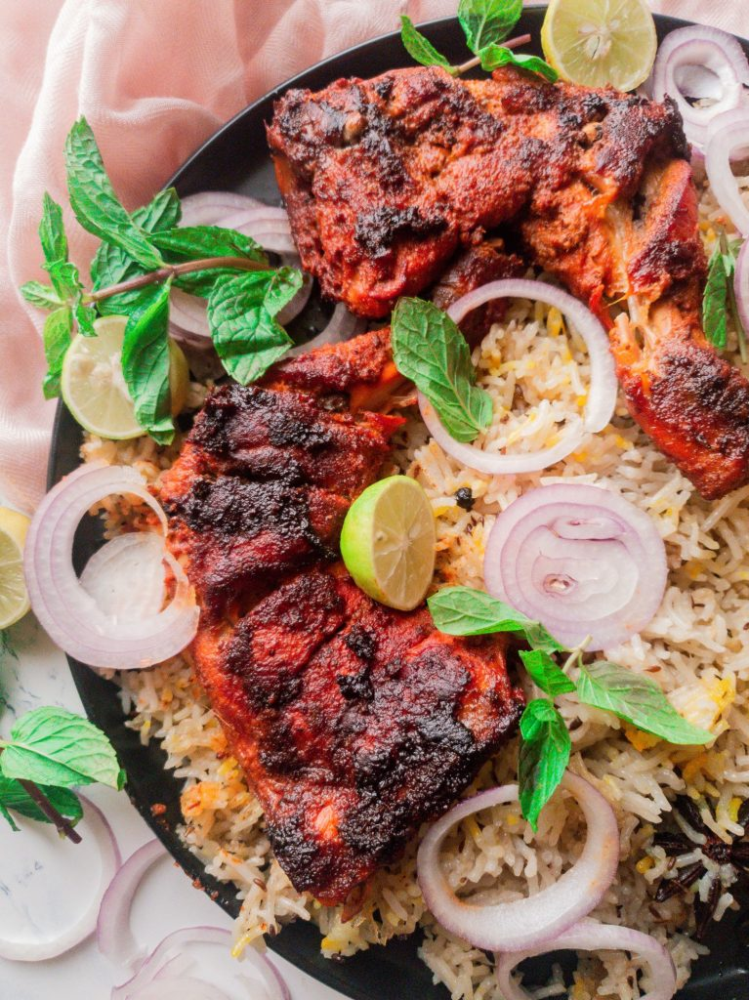

Easy Chicken Tikka Recipe
By Engr.M.Asim Shaikh / January 4, 2023 / Chicken Recipes, Pakistani food

This had to be done! I had to put up traditional Chicken Tikka recipe on my page.
About Page
Description Page